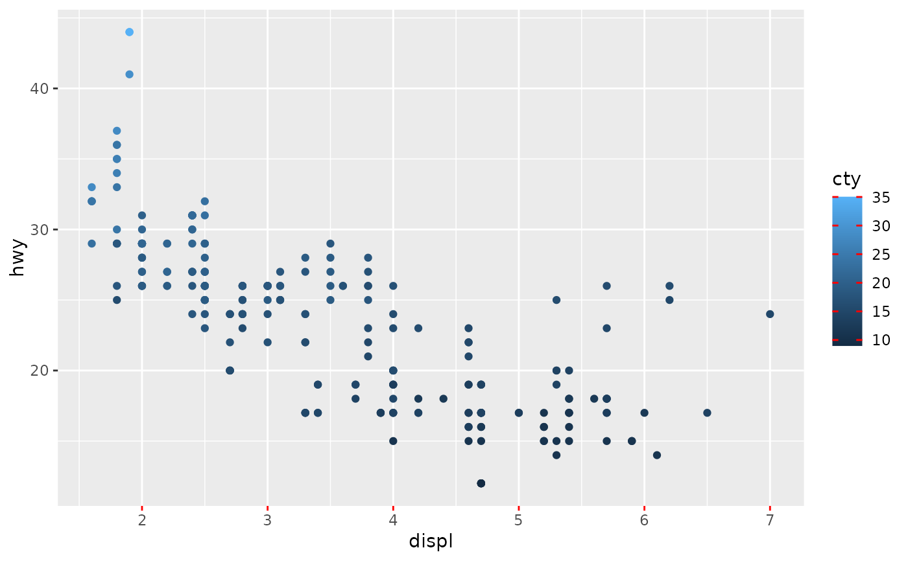

This function has shorthand names for theme elements relating to guides. It
is intended to be used as the guide_*(theme) argument. Because of this
intent, and due to legends and axes having mutually exclusive theme elements,
this function sets the elements for both simultaneously.
Usage
theme_guide(
text = NULL,
line = NULL,
title = NULL,
subtitle = NULL,
text.position = NULL,
title.position = NULL,
subtitle.position = NULL,
ticks = NULL,
minor.ticks = NULL,
mini.ticks = NULL,
ticks.length = NULL,
minor.ticks.length = NULL,
mini.ticks.length = NULL,
spacing = NULL,
key = NULL,
key.size = NULL,
key.width = NULL,
key.height = NULL,
key.spacing = NULL,
key.spacing.x = NULL,
key.spacing.y = NULL,
frame = NULL,
byrow = NULL,
background = NULL,
margin = NULL,
bracket = NULL,
bracket.size = NULL,
box = NULL,
fence = NULL,
fence.post = NULL,
fence.rail = NULL
)Arguments
- text
An
<element_text>setting bothlegend.textandaxis.textelements.- line
An
<element_line>setting bothlegend.axis.lineandaxis.lineelements.- title
An
<element_text>setting bothlegend.titleandaxis.titleelements.- subtitle
An
<element_text>setting bothgguidance.legend.subtitleandgguidance.axis.subtitleelements.- text.position, title.position, subtitle.position
One of
"top","right","bottom"or"right"setting the following elements:text.position: sets onlylegend.text.position.title.position: sets onlylegend.title.position.subtitle.positionsets bothgguidance.legend.subtitle.positionandgguidance.axis.subtitle.position
- ticks
An
<element_line>setting bothaxis.ticksandlegend.tickselements.- minor.ticks
An
<element_line>settinggguidance.legend.minor.ticksand all 6 of theaxis.ticks.minor.{r/theta/x.top/x.bottom/y.left/y.right}elements.- mini.ticks
An
<element_line>setting bothgguidance.legend.mini.ticksandgguidance.axis.mini.tickselements.- ticks.length, minor.ticks.length, mini.ticks.length
A [
<unit[1]>][grid::unit()] setting the following elements:ticks.length: sets bothlegend.ticks.lengthandaxis.ticks.length.minor.ticks.lengthsets bothaxis.minor.ticks.lengthandgguidance.legend.minor.ticks.length.mini.ticks.lengthsets bothgguidance.axis.mini.ticks.lengthandgguidance.legend.mini.ticks.length.
- spacing
A [
<unit[1]>][grid::unit()] setting thegguidance.guide.spacingtheme element.- key
An
<element_rect>setting thelegend.keyelement.- key.size, key.width, key.height
A
<unit>setting thelegend.key.size,legend.key.widthandlegend.key.heightelements respectively.- key.spacing, key.spacing.x, key.spacing.y
A [
<unit[1]>][grid::unit()] setting thelegend.key.spacing,legend.key.spacing.xandlegend.key.spacing.yelements respectively.- frame
An
<element_rect>setting thelegend.frameelement.- byrow
A
<logical[1]>setting thelegend.byrowelement.- background
An
<element_rect>setting thelegend.backgroundelement.- margin
A
<margin>setting thelegend.marginelement.- bracket
An
<element_line>setting thegguidance.bracketelement.- bracket.size
A [
<unit[1]>][grid::unit()] setting thegguidance.bracket.sizeelement.- box
An
<element_rect>setting thegguidance.boxelement.- fence, fence.post, fence.rail
An
<element_line>setting thegguidance.fence,gguidance.fence.postandgguidance.fence.railrespectively.
Examples
red_ticks <- theme_guide(ticks = element_line(colour = "red", linewidth = 0.5))
# Both axis and colourbar gain red ticks
ggplot(mpg, aes(displ, hwy, colour = cty)) +
geom_point() +
guides(
colour = guide_colourbar(theme = red_ticks),
x = guide_axis(theme = red_ticks)
)
